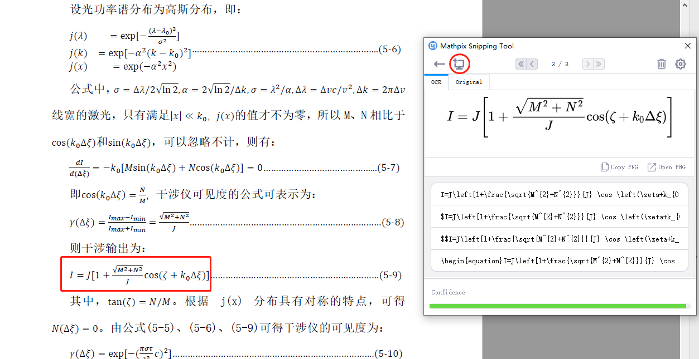
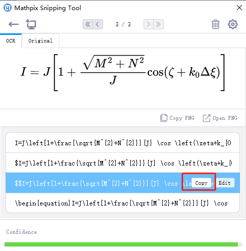
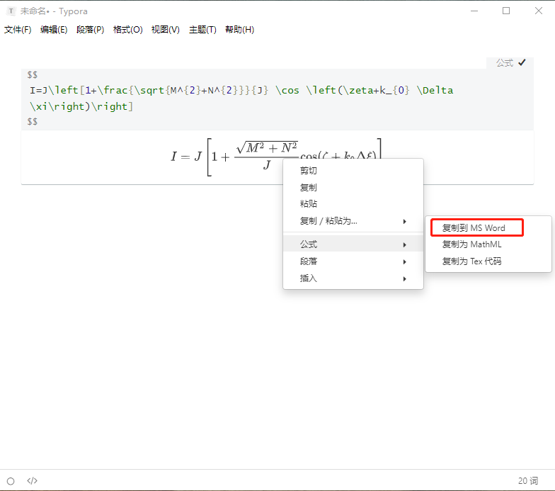

PDF截图输入公式到Word 发表于 2020-03-09 安装下载安装Mythpix和Typora （下载链接http://buwendingde.xyz:12001/s/7c2FmnNPBgspxAx) 其中Mythpix一个月免费使用50次，之后每月5刀。 使用 打开PDF，通过Mythpix截取需要识别的公式（快捷键ctrl+alt+M）  选择第三项复制 打开Typora，粘贴公式 右键转换好的公式，选择公式–复制到MS Word  在Word中粘贴公式